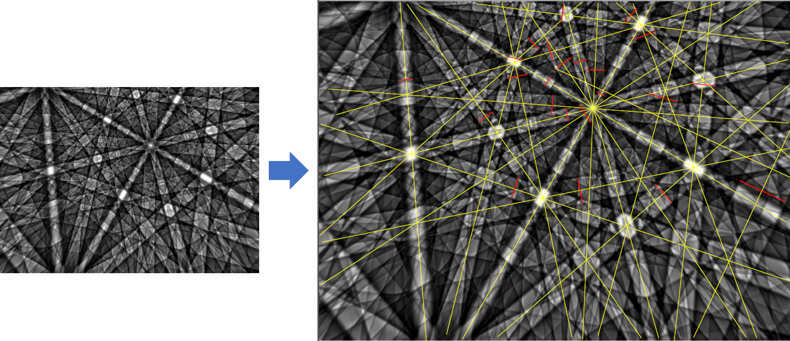
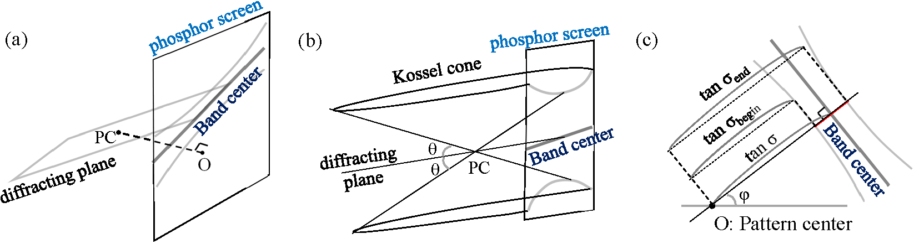

Instructions for EBSD-CONOGRAPH (CUI version)
[English / Japanese]
This page explains the open source software EBSD-CONOGRAPH Version 0.99 (download page in OSDN.jp).
The software executes ab-initio indexing of Kikuchi patterns (Figure 1) obtained by electron Backscatter Diffraction (EBSD).
The indexing method is based on the CONOGRAPH method originally invented for the powder auto-indexing software Conograph.

Figure 1 : Kikuchi Pattern (Simulation data of steel) and a result of band extraction.
Yellow lines indicate band centers (or lines parallel to them).
The red segments, which are parts of the perpendicular lines through the pattern center, indicate the band widths.
Before starting the software, it is necessary to extract the following information from the Kikuchi pattern and input them from data.txt:
band-center positions (φ, σ),
band widths (σbegin, σend).
EBSD indexing programs should also include codes for automatic PC calibration and band detection,
but these functions have not been yet implemented into the distributed software.
This also reflects the current situation that
methods for each stage are still begin studied in order to improve their accuracy and reliability.
Methods and programs for ab-initio indexing can be developed independently from the above preprocessing stages.
Even if the PC and band positions include errors to some degree,
it is possible to estimate the unitcell parameters,
although the following principle problems cannot be avoided:
errors in the projection center, band center positions and band widths increase the errors and the uncertainties in the obtained unitcell parameters.
there is an ambiguity in the ab-initio indexing (i.e., multiple distinct solutions can be as good as the correct one),
which happens, in particular, in case of unclear band edges and unitcells with low symmetry [1].
The software EBSD-CONOGRAPH requires the following data.txt and input.txt as input files.
(Examples can be found in the Sample folder.)
input.txt: includes input parameters to adjust the search method and the output.
(Example)
data.txt: includes information about the band center positions and band widths.
Example 1: data.txt (3 columns: φ, σbegin, σend. The σ is set to (σbegin + σend)/2 in this case),
Example 2: data.txt (4 columns: φ, σ, σbegin, σend).
The flag 0/1 in the first line of data.txt indicates either of the following options:
1: estimation of the unitcell parameters from φ, σ, σbegin and σend
* The uncertainties of the unitcell parameters are increased in this case, because of errors in band widths (i.e., σbegin and σend.
0: estimation of the length ratios a/c, b/c and the angles α, β, γ based on only φ and σ.
Copy one of the folders from the Sample folder.
Modify the contents of data.txt (and input.txt in order to improve the indexing results).
Open a command prompt or terminal window in your operating system.
Change the current folder to the same folder that contains the modified input files.
Enter the path to the EBSDConograph.exe file on the Command Prompt window and execute EBSDConograph.
Figure 2 explains how φ, σ, σbegin, σend are provided by the band positions and widths in an EBSD image.

Figure 2: (a) band center lines can be regarded as
the intersections of the phosphor screen and diffracting planes through the projection center (PC).
The pattern center O is the foot of the perpendicular line from the PC to the phosphor screen.
(b) band edges are
the intersections of the phosphor screen and conical surfaces (the so called, Kossel cones).
They are parts of hyperbola lines (formula).
In (c), the phosphor screen is parallel to the sheet. The unit of the length is fixed so that the camera length (= distance between the PC and the screen) equals 1.
The φ is the angle between the x-axis and the perpendicular line from O to the band center line.
The σ, σbegin, σend are obtained
from the distances of the center lines or the band edges from O.
The band widths are necessary in order to
uniquely
determine the ratios a/c, b/c and the angles α, β, γ,
and obtain the unitcell scale (and hence, a, b, c).
In fact, the Bragg angle θ is obtained from the band width by
2 θ = σend - σbegin.
Futhermore, by the Bragg's law,
\begin{eqnarray*}
2 d \sin \theta = n \lambda,
&& d: \text{d-spacing of the diffracting plane}, \\
&& n: \text{integer},\quad \lambda: \text{wave length of the electron beam}.
\end{eqnarray*}
Thus, if $n a^*$ ($n$: integer) are
the reciprocal lattice vectors orthogonal to the diffracting plain,
\begin{eqnarray}
\sin \theta = n \lambda/2 d = \left| n a^* \right| \lambda/2, \quad | | \text{ is the vector length}.
\end{eqnarray}
As a result of Eq.(1),
the bands correponding to the Miller indices $n (h k \ell)$ of $n a^*$ (n: integer),
have the identical center lines but distinct band widths.
Normally the band edges with $n = \pm 1$ are the most clearly observed.
However, visible bands are influenced by the magnitudes of structure factors
and reflection rules due to the space-group symmetry (Nolze & Winkelmann, 2017), and furthermore, there seem to be exceptions (Fig. of Day (2008)).
In the output files, candidate unitcells are classified by their Bravais types,
and sorted by the values of the figure of merit (Mnew) defined in [1].
The following parameters are also output, after they are refined by using a non-linear squares method:
The basis $a_1$, $a_2$, $a_3$ of the crystal lattice that satisfies the following equation, and the estimated errors of their components:
\[
\begin{pmatrix}
a_1 \cdot a_1 & a_1 \cdot a_2 & a_1 \cdot a_3 \\
a_2 \cdot a_1 & a_2 \cdot a_2 & a_2 \cdot a_3 \\
a_3 \cdot a_1 & a_3 \cdot a_2 & a_3 \cdot a_3 \\
\end{pmatrix}
=
\begin{pmatrix}
a^2 & ab \cos \gamma & ac \cos \beta \\
ab \cos \gamma & b^2 & bc \cos \alpha \\
ac \cos \beta & bc \cos \alpha & c^2
\end{pmatrix},
\quad a, b, c, \alpha, \beta, \gamma: \text{unitcell parameters}.
\]
Euler angles θ1, θ2, θ3
that represents the direction of the lattice (more precisely, the following orthogonal matrix $G$), and their estimated errors:
\[
G := L^{-1} A =
\begin{pmatrix}
\cos \theta_1 & \sin \theta_1 & 0 \\
-\sin \theta_1 & \cos \theta_1 & 0 \\
0 & 0 & 1 \\
\end{pmatrix}
\begin{pmatrix}
1 & 0 & 0 \\
0 & \cos \theta_2 & \sin \theta_2 \\
0 & -\sin \theta_2 & \cos \theta_2 \\
\end{pmatrix}
\begin{pmatrix}
\cos \theta_3 & \sin \theta_3 & 0 \\
-\sin \theta_3 & \cos \theta_3 & 0 \\
0 & 0 & 1 \\
\end{pmatrix},
\]
where $A$ is the $3 \times 3$ matrix with the row vectors $a_1$, $a_2$, $a_3$, and $L$ is the lower triangle matrix with $L L^T = A A^T$.
Projection-center shift Δ x, Δ y, Δ z, and their estimated errors.
If the camera length and the pattern-center coordinate used to make the input file data.txt
are denoted by $L^{obs}$ and $(X^{old}, Y^{old})$,
the new camera length and the pattern-center coordinate are given by:
\begin{eqnarray*}
L^{new} &=& (1 - \Delta z) L^{old}, \\
(X^{new}, Y^{new}) &=& (X^{old}, Y^{old}) + (L^{old} \Delta x, L^{old} \Delta y).
\end{eqnarray*}
The following should be noted, with regard to the above parameters:
in some cases, the parameters become worse by the refinement process,
as a result of changes in the Miller indices assigned to the bands.
the above estimated errors are
propagation errors, when it is assumed in the non-linear least squares method that
the input angles φ, σ, σbegin, σend have errors
within 1 degree.
Since Mnew is a generalization of the de Wolff M used in powder indexing,
M and Mnew have similar properties, except that M prefers higher-symmetric cells (c.f. ⑥ of Table 5-2, page 5-5 of CONOGRAPH manual).
Namely,
If Mnew > 10 for some unitcells, there are much possibility that the correct solution has been obtained.
The correct solution should be one of the unitcells that gained approximately the largest Mnew value.
Similar unitcell parameters have similar Mnew values, even if they belong to distinct Bravais types.
Therefore, user should check both the value of the figure of merit and the Bravais types,
when selecting the correct solution from the output list.
The following two options can be chosen as a searching method:
Quick search (often enough for unitcells with high symmetry),
Exhaustive search (for all cases).
The searched region can be also expanded by increasing the following parameters (the upper ones are more influential. Also see explanations in input.txt),
although comparatively large numbers are already used in the attached input.txt:
Upper bound on errors in phi, sigma, sigma_begin, sigma_end: 1 degree,
Max |h|,|k|,|l| used for indexing : 7,
Tolerance level for errors in the unitcell scales : 3.,
If you use the program for your research, we strongly encourage you to include a citation of the following article in the bibliography.
R. Oishi-Tomiyasu, T. Tanaka, J. Nakagawa,
“Distribution rules of systematic absence and generalized deWolff figure of merit applied to EBSD ab-initio indexing”,
arxiv.